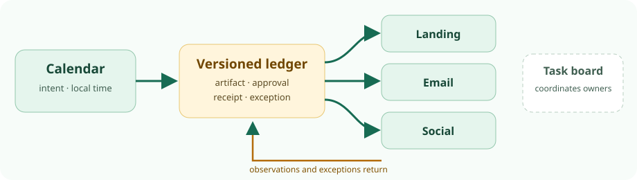

Campaign release reconciliation · 15 Oct 2026 · source audit
From a campaign calendar to destination receipts.
For one landing update, email and social post, keep the existing shared calendar and add a versioned receipt ledger first. The calendar records intent; the ledger compares the approved artifact with what each destination accepted and what an operator later observed. A Vikunja board can coordinate repeated handoffs, but it neither publishes nor verifies a channel.

First compare plan with observation
Every name, campaign term, time, ID, count and URL in this example is invented. Times are Europe/Berlin, CET (UTC+01:00), 4–5 November 2026. The canonical card DEMO-25 v2 says “five demo credits for eligible new teams through 20 November” and links to https://example.com/demo/eligibility; v1 said ten credits through 30 November. Fact owner F. approved the exact v2 artifacts at 4 Nov 09:22, after a v1 social post was already public.
| Destination / owner | Planned and approved | Accepted by channel | Observed result | Exception and next decision |
|---|---|---|---|---|
| Landing W. Web can stop or revert deployment. | 4 Nov 09:30; v2 LP-build-042, illustrative digest lp42-v2-demo25. F. 09:22; W. deploy check 09:25. | DEP-442 accepted at 09:26 for 09:30. This is a job receipt, not proof of a live page. | At 09:35 the example URL still serves v1 LP-build-041 (WEB-935 capture). v2 is visible with build 042 at 10:15 (WEB-1015). | 45-minute delay. W. holds v2 email and social links until the page is observed. Preserve failed deploy and v1 capture; investigate, then recheck URL/build. Reconciliation recorded 5 Nov 10:00, subject to recheck. |
| Email M. Mail can pause/cancel queue and approve a correction send. | 4 Nov 09:45; v2 EM-export-009, illustrative digest em009-v2-demo25. F. 09:22; M. rendered-link review 09:28. | Old v1 EM-export-008 queued under ESP-Q-81 at 09:15. Cancellation timed out at 09:30: state unknown. v2 was not queued. | No reliable provider result at 09:45. A fictional ESP audit at 10:40 shows ESP-S-81, a provider-send at 09:47 for 600 attempted recipients. Individual delivery/bounce is unverified. | Freeze requeues of both exports; M. checks queue and sender events by ID. Classify v1 as sent-to-provider, not delivered. Any EM-corr-010 needs separate fact and channel approval. Attempt/state reconciled 5 Nov 11:00; delivery stays open. |
| Social S. Social can cancel, remove or visibly correct under platform policy. | v2 intended 4 Nov 10:00; SOC-post-013, illustrative digest soc013-v2-demo25. F. 09:22; S. waits for landing observation. | Stale v1 SOC-post-012 was accepted under SOC-Q-12 for 09:10. The v2 slot is held. | Platform screen and example permalink https://social.example/post/12, capture SOC-L-12, show v1 public at 09:10. It is not a future queue item. | Preserve post ID, permalink, content and time. S. and F. decide removal or visible correction; log new SOC-post-014 rather than rewriting the original receipt. Reviewed 5 Nov 10:30; reach remains unknown. |
The ledger needs the actual artifact bytes or durable storage link and a cryptographic digest, not just these illustrative strings. Keep approval identity/time, owner, stop authority, source system, observation time, receipt URL or export, evidence class, and an append-only superseding correction row. A correction is a new event, not a replacement of history.
Two exceptions a calendar cannot close
Unknown email cancellation
A timeout proves neither cancellation nor failure. Hold sends using superseded copy. The authorized ESP operator queries ESP-Q-81 and provider/message events, checks for already accepted attempts before any retry, and retains the ambiguous request. If queue state cannot be resolved before launch, hold email and mark it unresolved. A provider sent event is not inbox delivery.
Already-public social v1
Record the post ID, permalink, observed content and first/last observation times. Stop any remaining duplicate schedule. S. and F. choose a visible correction, documented removal or another policy-appropriate remedy. Preserve the original receipt: a new post cannot erase its exposure interval. A permalink does not establish reach.
Four evidence levels, not one done flag
- PlannedCalendar or task records intended local time, timezone, owner and approved version.
- Accepted by channelDeploy job, ESP queue or social scheduler accepts a request; it may still fail or change.
- Observed destination/provider resultRendered page URL/build, ESP sender event, or platform post ID/permalink is checked and timestamped.
- Business outcomeDelivery, reach and conversion require separate evidence. None follows from a queue, webhook, checked task or permalink.
Each transition needs its own source record, time and exact content version. Channel-native admin screens are authoritative for their own queue or publication state, but cannot alone reconcile parity across all three destinations.
Vikunja v2.7.0: coordination, not release proof
The v2.7.0 release was the latest shown on 15 October; it is dated 2 October and shows a signed tag at commit a16be96aa454671fdf213b0fbe411dd38a098418. Source archives and packaged assets were listed but not downloaded, run or signature-verified. The tagged LICENSE and selected task and webhook model files were inspected. Application code identifies AGPL-3.0-or-later; that is not a licence for campaign copy, attachments, dependencies, platform APIs or hosting.
The tagged task model includes project, title, description, done/done-at, dates, reminders, priority, labels, assignees, attachments, comments, timestamps and task ID. Living help describes list/table/Kanban/Gantt views, task comments and assignments, and dates and reminders. One task per placement can point to the approved artifact and central ledger row; labels such as hold or needs-receipt can aid triage. Due date is not a publisher schedule. An assignee is not necessarily the person authorized to stop a channel.
The inspected Task struct has no dedicated canonical-copy version, artifact digest, approval identity/time, queue status, destination receipt, discrepancy class, stop authority, outcome or reconciliation time. Description or attachment conventions can hold links, but the independent versioned ledger should hold these records. Mutable labels and done_at report internal task state, not external observation. User ZIP export and CSV import aid portability, not proof of a channel result.
Current permission and sharing help describes Read, Read & Write and Admin project rights. Read & Write may edit or delete tasks; link shares need no named account and may grant Write/Admin. Use named accounts for unreleased copy, not an unlisted link as approval identity. Mentions and reminders prompt action but do not confirm it. Current webhook help describes optional HMAC and one-shot delivery without retry; tagged code sends an HTTP POST. A Vikunja event does not establish an ESP, page or social state, and the inspected material does not show an enforced two-person channel gate. This is a bounded inference, not an exhaustive security proof.
Ordinary comments and created/updated/done times are not tamper-proof release history. Current Pro documentation describes structured audit logs as a Pro entitlement; the offering page describes Pro as private beta. Even a Pro log would record Vikunja activity, not external destination success.
Choose the least costly route
| Route | Useful when | Unresolved work |
|---|---|---|
| A · Shared calendar + versioned receipt ledger | First trial for three placements and named owners; no server migration. | Owners still inspect CMS/build, ESP and platform, preserve evidence, escalate unknowns and revisit next day. The ledger needs permissions and backup. |
| B · Vikunja board + central ledger | Repeated campaigns, more owners and missed follow-ups justify task views, assignments and reminders. | Native-channel checks remain. Team operates identities, notifications, permissions, server or host, export and restore. Task completion is not a release gate. |
| C · Channel-native screens + central record | Timely status is most readily checked in each destination; a simple shared sheet may suffice. | Screens are siloed and mutable. Record IDs, timestamps and evidence centrally; provider acceptance and outcomes still differ. |
The current install guide describes a bundled API/frontend binary or container, Docker with SQLite volume or database alternatives, public URL/CORS setup, upgrades and migrations. Self-hosting also means TLS/exposure, patching, persistence, monitoring, notifications/SMTP if used, and restore rehearsal. The backup guide calls for database plus attachment files and warns that project deletion is irreversible; user export does not replace an instance restore. Security hardening remains operator work. Cloud or third-party hosting shifts some operations but adds plan, data-location and access questions; no price or total-cost estimate was verified.
Cloud is a separately operated hosted service. Pro is an optional self-hosted/dedicated entitlement; current docs describe an admin panel, time tracking and audit logs, a licence check to Vikunja servers, up to 72-hour cached entitlement and fallback to community mode. The Pro page describes beta status, tiers and features not yet available. These are vendor claims, not tested contract terms or evidence of Cloud/Pro parity. Help and install pages are living documents, not pinned v2.7.0 manuals: the install page mentions image signing “starting with v2.7.1,” which cannot prove the inspected v2.7.0 artifact was signed. The earlier Postiz source-only review is a bounded contrast: a scheduler's internal status and preview comments do not establish provider result or enforced approval. This report does not re-audit Postiz.
Launch decision and next-day check
Go per destination only after the fact owner and channel owner approve the exact artifact, URL/links and local time/timezone, and the channel owner checks native state. If the page remains v1, hold v2 links. If old email queue state is unknown, hold new queue actions and resolve or escalate. If v1 social is already live, classify exposure and open a separately approved correction. Task color or calendar time cannot override a hold.
- Fetch the actual page URL; record visible copy, build/revision, observation time and relevant cached/CDN variant. Compare with the approved digest.
- Query the ESP by exact export/queue ID; distinguish queued, cancelled, accepted/attempted, failed, delivered/bounced if available, and unknown.
- Open social permalink and platform status by post ID; record content, correction or removal outcome, time and evidence.
- Compare each result with approved version and planned time. Sign off discrepancies and corrections; keep unavailable delivery, reach and conversion explicitly unknown.
Not established: any real deployed page, recipient result, social reach, installed Vikunja UI behavior, instance roles or notifications, exact release artifact provenance, current Cloud/Pro contract, or workflow success rate. Those require authorized destination records or a separately scoped isolated test. External audience findings suggest handoff needs qualitatively, not measured demand for this software or pattern.